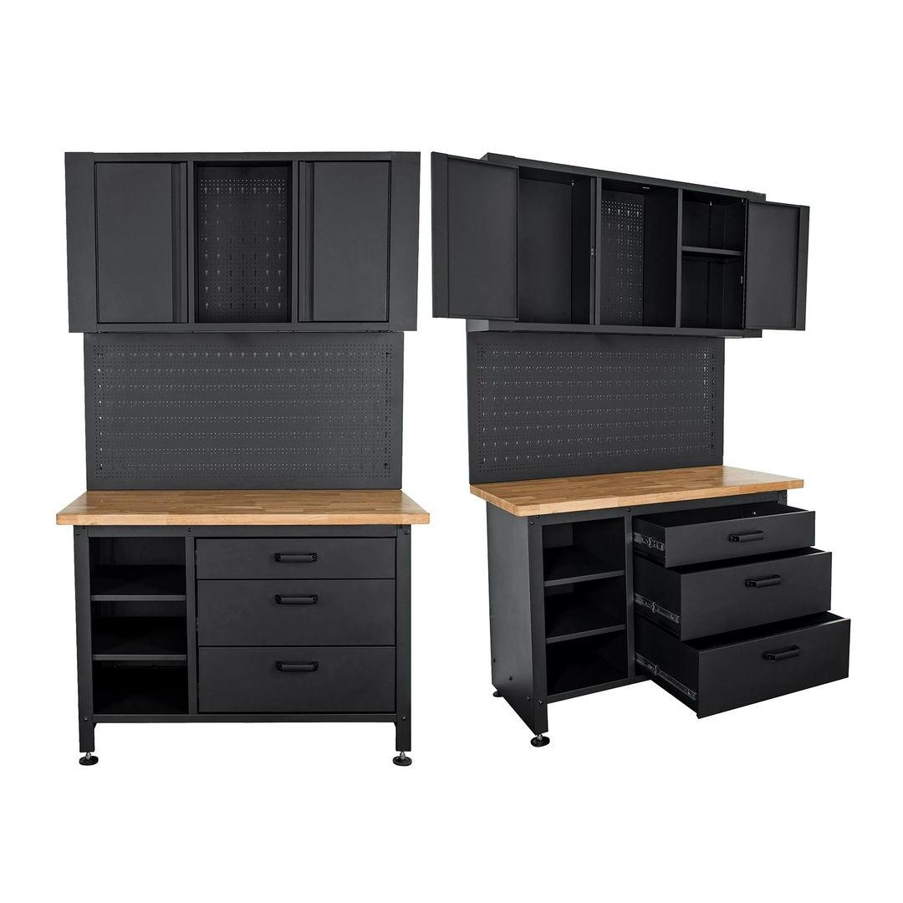

TC620100
21578.60

Size: 2000mm x 1200mm
This robust metal storage unit offers a comprehensive workspace solution, measuring 2000x1200mm to maximize your storage and work area. It combines a sturdy work bench, a versatile peg board for tool organization, a convenient cupboard for secure storage, and three drawers for smaller item containment. Constructed from durable metal, this unit is designed to withstand heavy use in workshops, garages, or industrial settings, providing a well-organized and efficient workspace.
Application:
Content